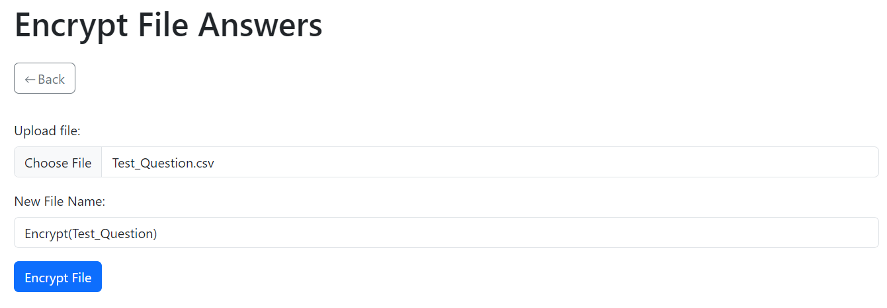

User Guide
Hash File Guide
Hash file will hash the answer for file and when start practice, you cannot view for the answer.
1. Go to "Update File" on left sidebar, and select Hash Answer, input the file you want to hash for the answer, input for the new file name and click the Hash File button
2. After hash the file, it will show the original file name and the hash of the file
3. In Question File page, you can view the file you just hash, and also the original file name and the hash. At the top you can input the file and keyin the hash to check the file is the same with the original without any change or update.